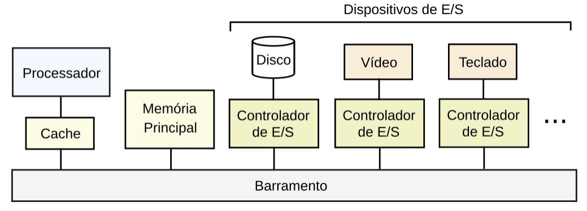
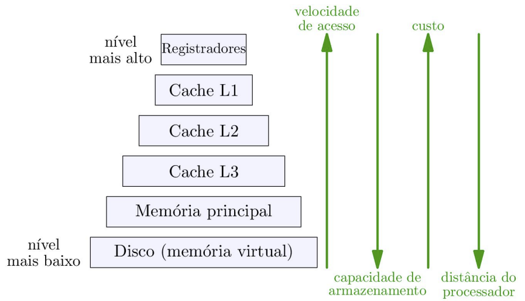

Disciplinas
-
SISTEMAS COMPUTACIONAIS. Concluído
Materiais
Vídeo 1 - [UFMS Digital] Sistemas Computacionais - Módulo 1. sendProf° ministrante: Dra. Nahri Moreano.
Conteúdo
Visão Geral da Organização de um Computador.
- Processador
- Memórias
- Dispositivos de entrada e saída (E/S)
- Barramentos
Visão Geral da Organização de um Computador.
Processador.
- Também chamado de CPU (Central Processing Unit)
- Interpreta e executa instruções de máquina dos programas
- Programa, para ser executado, deve estar armazenado na memória
- Composto por:
- Unidade de controle
- Datapath (unidade de dados, caminho de dados)
- Unidade de Controle:
- Comanda datapath, memória e dispositivos de E/S
- Decodifica instruções de máquina e controla sua execução
- Datapath:
- Realiza operações comandadas pela Unidade de Controle para execução das instruções de máquina
- Composto por:
- Unidade lógico-aritmética (ALU)
- Registradores

Sistema de Memórias.
- Organizado em níveis: Hierarquia de memórias
- Cada nível com memória de tamanho e velocidade diferentes
- Cada nível é mais rápido, menor, de maior custo e mais próximo do processador que nível abaixo
- Tira proveito do princípio de localidade
Hierarquia de Memórias.
Princípio de Localidade.
- Em uma fase qualquer da sua execução, programa acessa uma porção relativamente pequena do seu espaço de endereçamento
- Localidade temporal:
- Se um item (instrução ou dado) do programa é acessado, provavelmente ele será acessado novamente num futuro próximo
- Localidade espacial:
- Se um item (instrução ou dado) do programa é acessado, provavelmente itens cujos endereços são próximos serão acessados num futuro próximo
Registradores.
- Pequenas unidades capazes de guardar informações:
- Dados, endereços, instruções
- Dispositivos de armazenamento de rápido acesso ⇒ Custo elevado ⇒ Processador tem poucos registradores
- Meio de armazenamento volátil
- Em geral, processadores possuem registradores para:
- Endereço na memória da próxima instrução a executar
- Endereço do dado que está no topo da pilha de execução
- Realização de operações lógico-aritméticas
Memória Principal.
- Também chamada de memória primária
- Armazena instruções e dados dos programas sendo executados
- Memória RAM (Random-Access Memory):
- Qualquer posição pode ser acessada com mesmo tempo de acesso
- Meio de armazenamento volátil
- Pode ser vista como uma estrutura unidimensional:
- Cada posição é uma célula onde pode-se armazenar uma informação
- Cada célula possui um endereço pelo qual é acessada
Memórias Cache.
- Níveis da hierarquia de memórias entre processador e memória principal
- Meio de armazenamento volátil
- Organizações:
- Cache de mapeamento direto
- Cache de mapeamento totalmente associativo
- Cache de mapeamento associativo por conjunto de n vias
Execução do Programa.
- Instrução de máquina:
- Comando que é interpretado e executado pelo processador
- Instruções de máquina do programa são executadas através do ciclo de execução de uma instrução:
- Busca instrução na memória
- Decodifica instrução
- Busca operandos
- Executa operação
- Escreve resultado
- Atualiza registrador com endereço da próxima instrução a executar
Função de Dispersão.
- O desempenho é medido pelo número de colisões;
- Pode ser estimado pelo fator de carga (fc): quantidade de chaves / M;
- Em geral, as colisões ocorrem quando a distribuição das chaves é desigual ou quando a tabela tem tamanho pequeno;
- Estratégias para lidar com as colisões se fazem necessárias, vamos conhecer algumas delas.
Referências.
- SZWARCFITER, Jayme Luiz; MARKENZON, Lilian.
- Estruturas de dados e seus algoritmos. 3. ed. Rio de Janeiro, RJ: LTC, 2010. ISBN 9788521629955.
- CORMEN, Thomas. Algoritmos: teoria e prática. Rio de Janeiro: GEN LTC, 2013. ISBN 9788595158092.